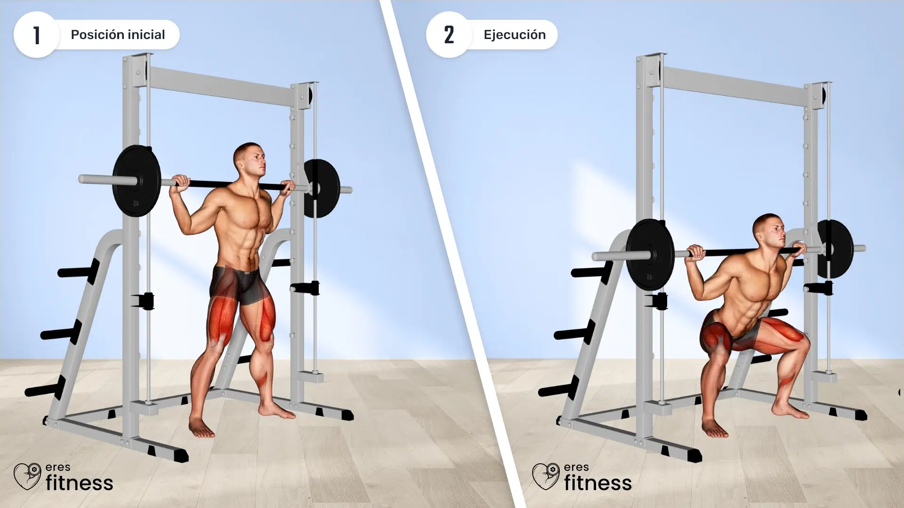
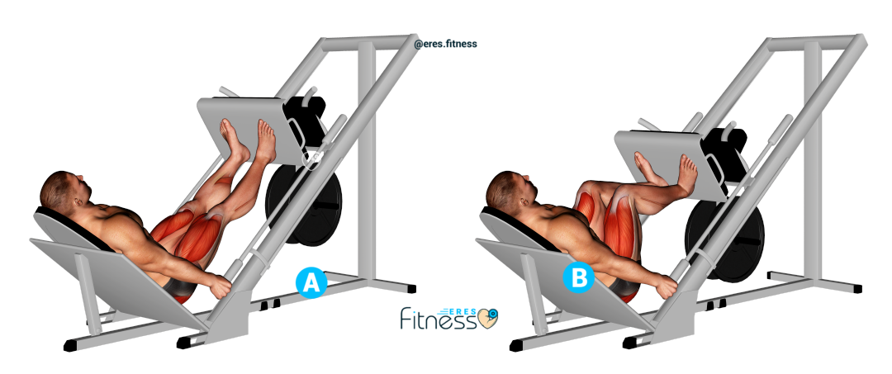
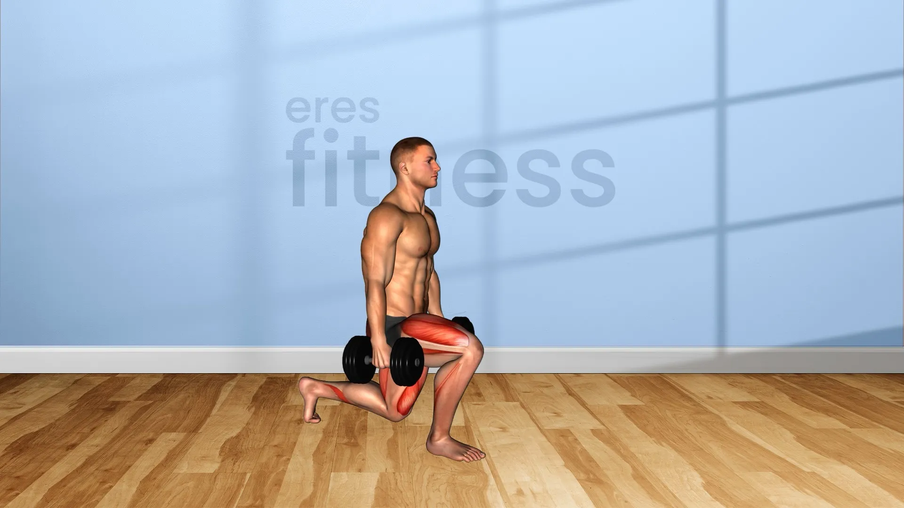
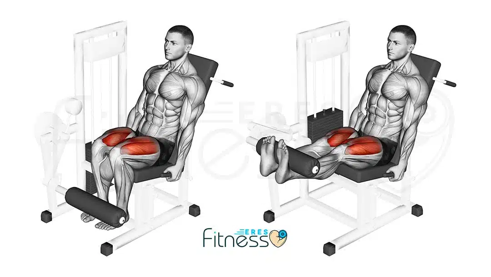
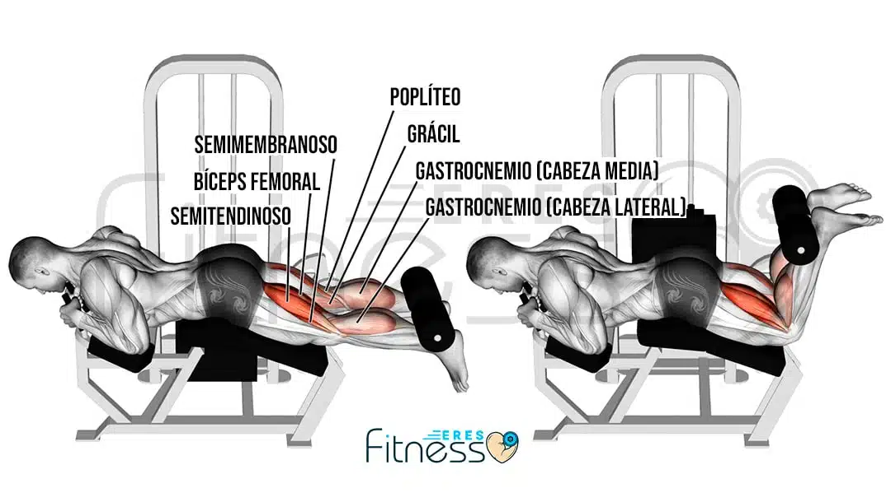
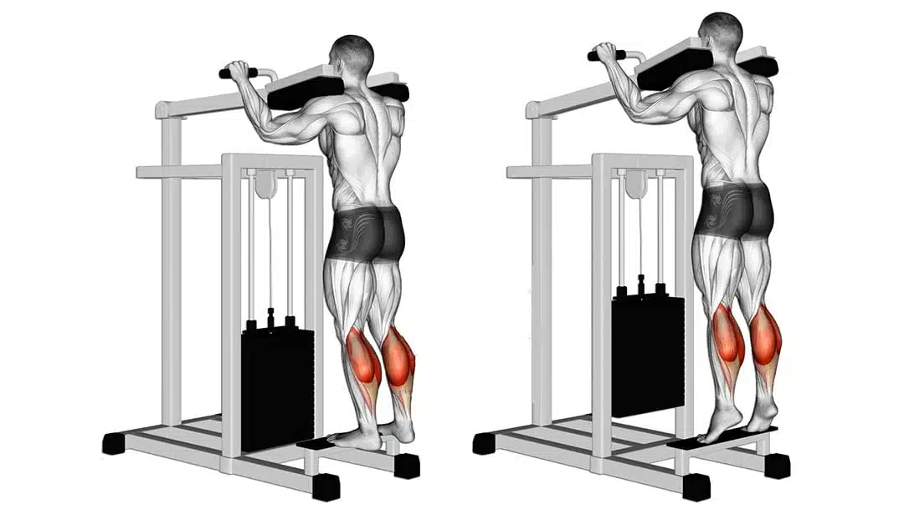
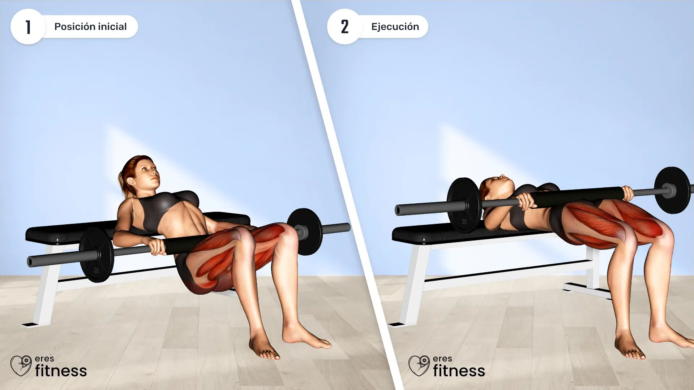
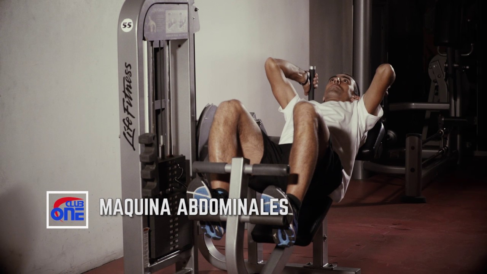

Miércoles - Piernas, Glúteos y Cardio
Objetivo: Trabajar el tren inferior de manera integral y potenciar los glúteos.
CALENTAMIENTO
5–10 MINUTOS DE CAMINATA LIGERA EN CINTA O ELÍPTICA
| Ejercicio | Dinámica | Demostración |
|---|---|---|
| Sentadillas (barra o máquina Smith) | Baja en 3 segundos manteniendo la espalda recta y sube en 1–2 segundos de forma explosiva |

|
| Press de piernas | Baja en 2–3 segundos y sube en dos tiempos, enfatizando la contracción de los cuádriceps |

|
| Zancadas (desplantes) con mancuernas | Da pasos controlados, baja en 2 segundos y sube en 1 segundo |

|
| Extensiones de piernas en máquina | Eleva la carga en 1 segundo y baja en 2–3 segundos |

|
| Curl femoral tumbado | Baja en 2 segundos y regresa de forma controlada |

|
| Elevación de talones (gemelos) | Sube en 1 segundo y baja en 2–3 segundos |

|
| Hip Thrust (elevación de cadera) | Con la parte superior de la espalda apoyada en un banco, baja en 2–3 segundos y sube de forma explosiva |

|
| Máquina de abdominales | Realiza el movimiento de forma fluida comprime rápido y regresa lento |

|
CARDIO COMPLEMENTARIO
20–30 MINUTOS EN LA ELÍPTICA A RITMO CONSTANTE